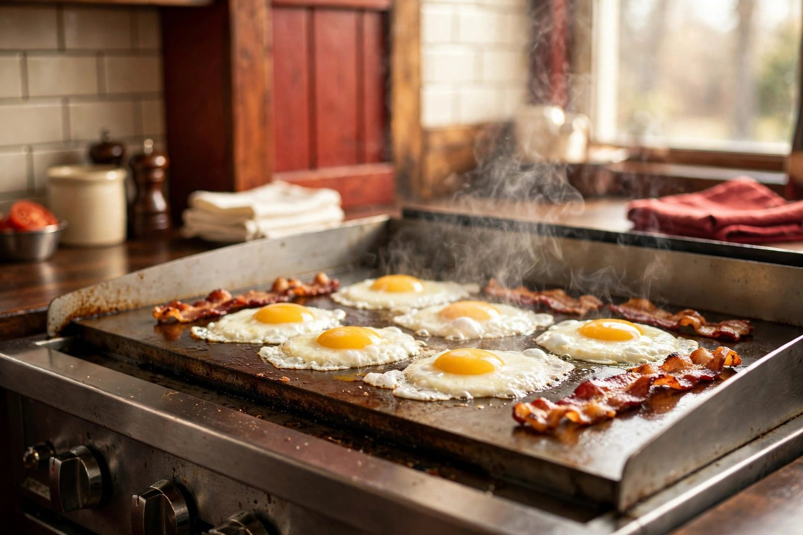

The short story
A roadside cafe
on Route 1.
Sue's Cobscook Bay Cafe is a breakfast-and-lunch cafe on US-1 in Edmunds Township, Maine — on the road most people take to Cobscook Bay State Park.
That's the honest shape of it: a place to eat well before the trails, or to land after them. Hot coffee, a working griddle, and a counter you can actually sit at. Travelers pull in for breakfast on the way to the bay; the lunch crowd is whoever's hungry at noon.
No white tablecloths, no tasting menus, no pretense. Two meals a day, done the way a roadside cafe should do them — fast enough for the road, good enough to come back for.
A note on this page: this is a concept demo, so the cafe's real story — the people, the history, the regulars — isn't ours to invent. When Sue's is ready, this page becomes hers: real photos, real story, real voice.

Breakfast people
Pancakes, eggs, and coffee that doesn't mess around. Mornings are the main event.
Lunch people
Lobster rolls, clubs, chowder — the midday lineup for the trail-weary and the road-hungry.
Park people
Cobscook Bay State Park is minutes away. Eat first, hike second — that's the local itinerary.